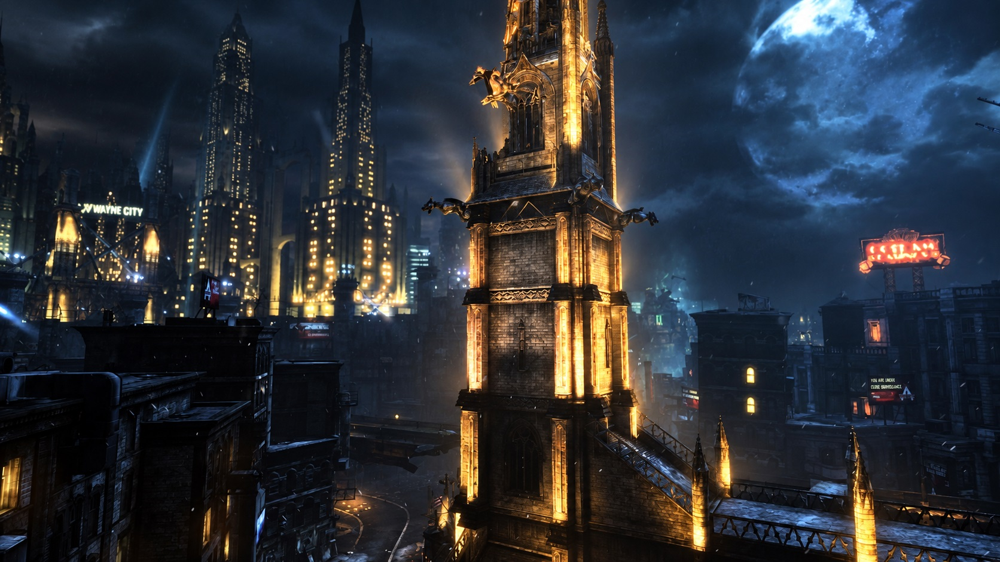

Catedral de Gotham
La Catedral de Gotham es uno de los edificios más emblemáticos de la ciudad y una visita imprescindible para conocer su patrimonio histórico. Su arquitectura gótica, sus enormes vitrales y sus altas torres conforman una de las postales más características de Old Gotham. Situada en el corazón del distrito histórico, ha sobrevivido a décadas de conflictos y transformaciones urbanas, convirtiéndose en un símbolo de la resiliencia de la ciudad.